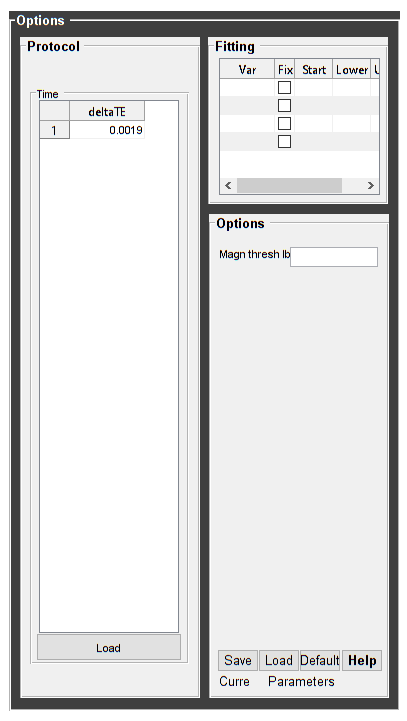
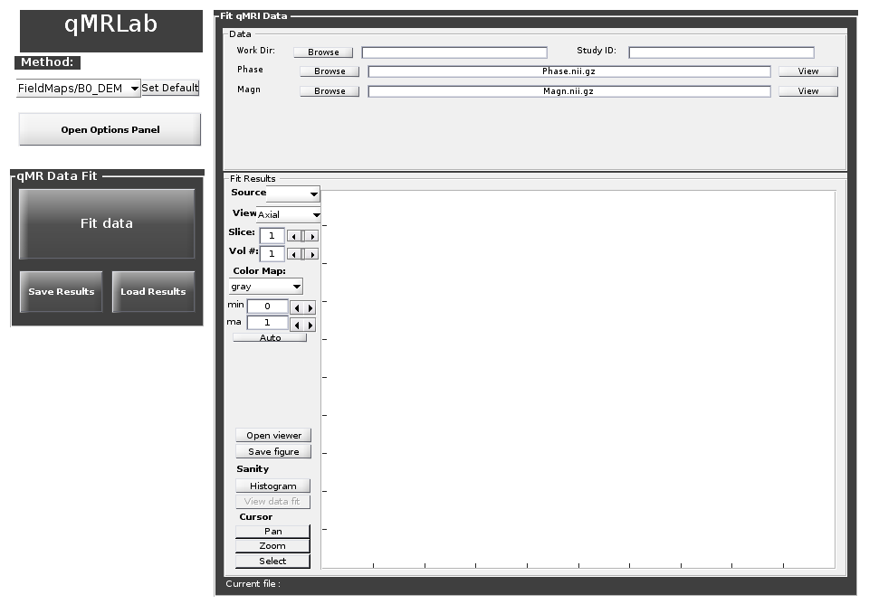

Contents
warning('off','all');
DESCRIPTION
help B0_DEM % Batch to generate B0map with Dual Echo Method (DEM) without qMRLab GUI (graphical user interface) % Run this script line by line % Written by: Ian Gagnon, 2017
B0_DEM map : Dual Echo Method for B0 mapping
Assumptions:
Compute B0 map based on 2 phase images with different TEs
Inputs:
Phase 4D phase image, 2 different TEs in time dimension
Magn 3D magnitude image
Outputs:
B0map B0 field map [Hz]
Protocol:
Time
deltaTE Difference in TE between 2 images [ms]
Options:
Magn thresh lb Lower bound to threshold the magnitude image for use as a mask
Example of command line usage (see also <a href="matlab: showdemo B0_DEM_batch">showdemo B0_DEM_batch</a>):
Model = B0_DEM; % Create class from model
Model.Prot.Time.Mat = 1.92e-3; % deltaTE [s]
data.Phase = double(load_nii_data('Phase.nii.gz'));%Load 4D data, 2 frames with different TE
data.Magn = double(load_nii_data('Magn.nii.gz'));
FitResults = FitData(data,Model);
FitResultsSave_nii(FitResults,'Phase.nii.gz'); %save nii file using Phase.nii.gz as template
For more examples: <a href="matlab: qMRusage(B0_DEM);">qMRusage(B0_DEM)</a>
Author: Ian Gagnon, 2017
References:
Please cite the following if you use this module:
Maier, F., Fuentes, D., Weinberg, J.S., Hazle, J.D., Stafford, R.J.,
2015. Robust phase unwrapping for MR temperature imaging using a
magnitude-sorted list, multi-clustering algorithm. Magn. Reson. Med.
73, 1662?1668. Schofield, M.A., Zhu, Y., 2003. Fast phase unwrapping
algorithm for interferometric applications. Opt. Lett. 28, 1194?1196
In addition to citing the package:
Cabana J-F, Gu Y, Boudreau M, Levesque IR, Atchia Y, Sled JG,
Narayanan S, Arnold DL, Pike GB, Cohen-Adad J, Duval T, Vuong M-T and
Stikov N. (2016), Quantitative magnetization transfer imaging made
easy with qMTLab: Software for data simulation, analysis, and
visualization. Concepts Magn. Reson.. doi: 10.1002/cmr.a.21357
Reference page in Doc Center
doc B0_DEM
Load dataset
[pathstr,fname,ext]=fileparts(which('B0_DEM_batch.m')); cd (pathstr); % Load your parameters to create your Model Model = B0_DEM;
Check data and fitting (Optional)
%************************************************************************** % I- GENERATE FILE STRUCT %************************************************************************** % Create a struct "file" that contains the NAME of all data's FILES % file.DATA = 'DATA_FILE'; file = struct; file.Phase = 'Phase.nii.gz'; file.Magn = 'Magn.nii.gz';
Create Quantitative Maps
%************************************************************************** % I- LOAD PROTOCOL %************************************************************************** % Echo (time in millisec) TE2 = 1.92e-3; Model.Prot.Time.Mat = TE2; % Update the model Model = Model.UpdateFields; %************************************************************************** % II- LOAD EXPERIMENTAL DATA %************************************************************************** % Create a struct "data" that contains all the data % .MAT file : load('DATA_FILE'); % data.DATA = double(DATA); % .NII file : data.DATA = double(load_nii_data('DATA_FILE')); data.Phase = double(load_nii_data('Phase.nii.gz')); data.Magn = double(load_nii_data('Magn.nii.gz')); %************************************************************************** % III- FIT DATASET %************************************************************************** FitResults = FitData(data,Model,1); % 3rd argument plots a waitbar FitResults.Model = Model; %************************************************************************** % IV- SAVE %************************************************************************** % .MAT file : FitResultsSave_mat(FitResults,folder); % .NII file : FitResultsSave_nii(FitResults,fname_copyheader,folder); FitResultsSave_nii(FitResults,'Phase.nii.gz'); %save('Parameters.mat','Model');
Check the results
Load them in qMRLab
qMRLab(Model,file) %view the model parameters and input imagesc(FitResults.B0map, [-50 50]) %view output map colorbar 